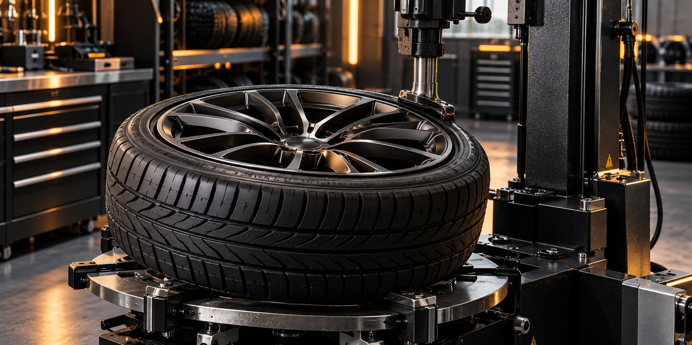

Шиномонтаж
Уточните возможность и условия замены шин.
По данным 2ГИС, автокомплекс предлагает шиномонтаж и мойку колёс. Стоимость, сроки и наличие нужной услуги можно уточнить у мастерской.
Открыть карточку в 2ГИС ↗
ИЛЛЮСТРАЦИЯ · ДЕМОПеречень работ и цены требуют подтверждения у мастерской. Здесь показано возможное оформление сайта.
Уточните возможность и условия замены шин.
Обсудите состояние шин и дисков с мастером.
Уточните сроки, цену и возможность записи.
Контакты и график требуют подтверждения владельцем.
Посмотреть на карте ↗